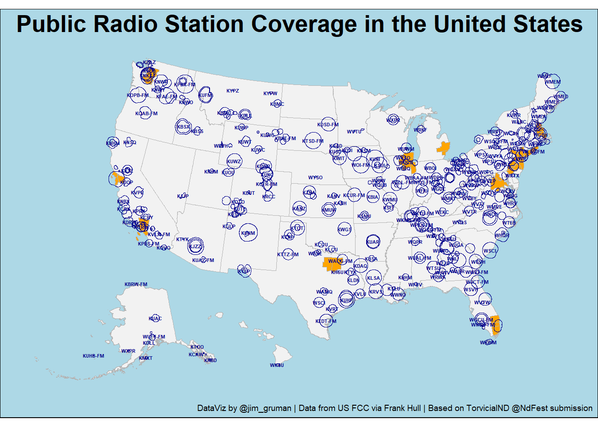

Last updated: 2022-11-19
Checks: 6 1
Knit directory: myTidyTuesday/
This reproducible R Markdown analysis was created with workflowr (version 1.7.0). The Checks tab describes the reproducibility checks that were applied when the results were created. The Past versions tab lists the development history.
The R Markdown file has unstaged changes. To know which version of
the R Markdown file created these results, you’ll want to first commit
it to the Git repo. If you’re still working on the analysis, you can
ignore this warning. When you’re finished, you can run
wflow_publish to commit the R Markdown file and build the
HTML.
Great job! The global environment was empty. Objects defined in the global environment can affect the analysis in your R Markdown file in unknown ways. For reproduciblity it’s best to always run the code in an empty environment.
The command set.seed(20210907) was run prior to running
the code in the R Markdown file. Setting a seed ensures that any results
that rely on randomness, e.g. subsampling or permutations, are
reproducible.
Great job! Recording the operating system, R version, and package versions is critical for reproducibility.
Nice! There were no cached chunks for this analysis, so you can be confident that you successfully produced the results during this run.
Great job! Using relative paths to the files within your workflowr project makes it easier to run your code on other machines.
Great! You are using Git for version control. Tracking code development and connecting the code version to the results is critical for reproducibility.
The results in this page were generated with repository version 4bba3a9. See the Past versions tab to see a history of the changes made to the R Markdown and HTML files.
Note that you need to be careful to ensure that all relevant files for
the analysis have been committed to Git prior to generating the results
(you can use wflow_publish or
wflow_git_commit). workflowr only checks the R Markdown
file, but you know if there are other scripts or data files that it
depends on. Below is the status of the Git repository when the results
were generated:
Ignored files:
Ignored: .Rhistory
Ignored: .Rproj.user/
Ignored: data/.Rhistory
Ignored: data/2022_11_01.png
Ignored: data/2022_11_18.png
Ignored: data/CNHI_Excel_Chart.xlsx
Ignored: data/Chicago.rds
Ignored: data/CommunityTreemap.jpeg
Ignored: data/Community_Roles.jpeg
Ignored: data/ELL.zip
Ignored: data/FM_service_contour_current.zip
Ignored: data/SeriesReport-20220414171148_6c3b18.xlsx
Ignored: data/Weekly_Chicago_IL_Regular_Reformulated_Retail_Gasoline_Prices.csv
Ignored: data/YammerDigitalDataScienceMembership.xlsx
Ignored: data/YammerMemberPage.rds
Ignored: data/YammerMembers.rds
Ignored: data/application_id.feather
Ignored: data/df.rds
Ignored: data/fit_cohesion.rds
Ignored: data/fit_grammar.rds
Ignored: data/fit_phraseology.rds
Ignored: data/fit_syntax.rds
Ignored: data/fit_vocabulary.rds
Ignored: data/grainstocks.rds
Ignored: data/hike_data.rds
Ignored: data/lm_res.rds
Ignored: data/raw_contour.feather
Ignored: data/raw_weather.RData
Ignored: data/sample_submission.csv
Ignored: data/submission.csv
Ignored: data/test.csv
Ignored: data/train.csv
Ignored: data/us_states.rds
Ignored: data/us_states_hexgrid.geojson
Ignored: data/weatherstats_toronto_daily.csv
Untracked files:
Untracked: analysis/2022_09_01_kaggle_tabular_playground.qmd
Untracked: code/YammerReach.R
Untracked: code/autokeras.R
Untracked: code/chicago.R
Untracked: code/glmnet_test.R
Untracked: code/googleCompute.R
Untracked: code/work list batch targets.R
Untracked: environment.yml
Untracked: report.html
Unstaged changes:
Modified: analysis/2021_01_19_tidy_tuesday.Rmd
Modified: analysis/2021_03_24_tidy_tuesday.Rmd
Deleted: analysis/2021_04_20.Rmd
Deleted: analysis/2022_02_11_tabular_playground.Rmd
Deleted: analysis/2022_04_18.qmd
Modified: analysis/2022_11_18_tidy_tuesday.Rmd
Modified: analysis/EnglishLanguageLearning.Rmd
Modified: analysis/Survival.Rmd
Modified: analysis/_site.yml
Modified: code/_common.R
Note that any generated files, e.g. HTML, png, CSS, etc., are not included in this status report because it is ok for generated content to have uncommitted changes.
These are the previous versions of the repository in which changes were
made to the R Markdown
(analysis/2022_11_18_tidy_tuesday.Rmd) and HTML
(docs/2022_11_18_tidy_tuesday.html) files. If you’ve
configured a remote Git repository (see ?wflow_git_remote),
click on the hyperlinks in the table below to view the files as they
were in that past version.
| File | Version | Author | Date | Message |
|---|---|---|---|---|
| Rmd | 4bba3a9 | opus1993 | 2022-11-19 | wflow_publish("analysis/2022_11_18_tidy_tuesday.Rmd") |
| html | 6664762 | opus1993 | 2022-11-19 | Build site. |
| Rmd | f3e8b10 | opus1993 | 2022-11-19 | wflow_publish("analysis/2022_11_18_tidy_tuesday.Rmd") |
| html | 9298870 | opus1993 | 2022-11-19 | Build site. |
| Rmd | de73731 | opus1993 | 2022-11-19 | wflow_publish("analysis/2022_11_18_tidy_tuesday.Rmd") |
The data this week comes from Wikipedia and the Federal Communications Commission, with a credit to Frank Hull for proposing and cleaning the initial dataset.
An example of one of the submissions to Twitter:
tweetrmd::include_tweet("https://twitter.com/NdFest/status/1591803647520018432")Where is all the Public Radio? This week's #TidyTuesday data looked at radio stations around the United States and their reach. The code can be found here: https://t.co/M85kpXlEO8
— DataFestND (@NdFest) November 13, 2022
And a link for data to reliably link the two TT data sets: https://t.co/QHS2Y6cItR pic.twitter.com/i7G7Y8jvz1
We will start by loading a few R packages into memory:
suppressPackageStartupMessages({
library(tidyverse)
library(sf)
library(tigris)
})
options(tigris_use_cache = TRUE)We will load the data as provided by R4DS and use their cleaing script:
tuesdata <- tidytuesdayR::tt_load('2022-11-08')--- Compiling #TidyTuesday Information for 2022-11-08 ------- There are 2 files available ------ Starting Download ---
Downloading file 1 of 2: `state_stations.csv`
Downloading file 2 of 2: `station_info.csv`--- Download complete ---state_stations <- tuesdata$state_stations |>
right_join(tuesdata$station_info |>
select(-licensee),
by = c("call_sign")) |>
filter(stringr::str_detect(format, 'Public'))
contour_zip_url <- "https://transition.fcc.gov/Bureaus/MB/Databases/fm_service_contour_data/FM_service_contour_current.zip"
contour_zip_file <- here::here("data","FM_service_contour_current.zip")
if (!file.exists(contour_zip_file)) {
download.file(contour_zip_url,
destfile = contour_zip_file)
}
raw_contour_feather <- here::here("data","raw_contour.feather")
if (!file.exists(raw_contour_feather)) {
raw_contour <- read_delim(
contour_zip_file,
delim = "|",
show_col_types = FALSE
) |>
select(-last_col()) |>
set_names(nm = c(
"application_id", "service", "lms_application_id", "dts_site_number", "transmitter_site",
glue::glue("deg_{0:360}")
)) |>
separate(
transmitter_site,
into = c("site_lat", "site_long"),
sep = " ,") |>
pivot_longer(
names_to = "angle",
values_to = "values",
cols = deg_0:deg_360
) |>
mutate(
angle = str_remove(angle, "deg_"),
angle = as.integer(angle)
) |>
separate(
values,
into = c("deg_lat", "deg_lng"),
sep = " ,"
) |>
mutate(
across(c(application_id,
site_lat,
site_long,
deg_lat,
deg_lng),
as.numeric))
arrow::write_feather(raw_contour,
sink = raw_contour_feather)
} else {
raw_contour <- arrow::read_feather(raw_contour_feather,
as_data_frame = TRUE)
}
contour_sf <- raw_contour |>
na.omit() |>
st_as_sf(coords = c("deg_lng", "deg_lat"), crs = 4326) |>
group_by(application_id) |>
slice_tail(n = 360) |>
summarise(geometry = st_combine(geometry)) |>
st_cast("POLYGON")The following loops through the call letters belonging to the different application IDs so that the two datasets that were provided on Tidy Tuesday can be linked.
As above, we will cache results in a feather file to avoid hitting the fcc web site unnecessarily.
application_id_feather <- here::here("data","application_id.feather")
if (!file.exists(application_id_feather)) {
application_id <- tibble(
application_id = unique(raw_contour$application_id),
call_sign = NA_character_)
site <- "https://licensing.fcc.gov/cgi-bin/ws.exe/prod/cdbs/pubacc/prod/app_det.pl?Application_id="
call_sign_extract <- function(application_id) {
Sys.sleep(sample(10, 1) * 0.02)
paste0(site, application_id) |>
rvest::read_html() |>
rvest::html_nodes("td") %>%
.[[20]] |>
rvest::html_text() |>
stringr::str_replace_all("\n", "") |>
stringr::str_squish()
}
application_id <- application_id |>
mutate(call_sign = map_chr(application_id, call_sign_extract))
arrow::write_feather(application_id,
sink = application_id_feather)
} else {
application_id <- arrow::read_feather(application_id_feather)
}public_radio <- contour_sf %>%
inner_join(application_id, by = "application_id") |>
inner_join(state_stations, by = "call_sign") |>
shift_geometry()
ggplot() +
geom_sf(data = tigris::states(cb = TRUE) |>
filter(STUSPS %in% c(state.abb,"DC")) |>
shift_geometry(),
color = "gray70",
fill = "gray95") +
geom_sf(data = tigris::metro_divisions(),
color = "gray70",
fill = "orange" ) +
geom_sf(data = public_radio,
fill = NA,
color = "darkblue"
) +
geom_sf_text(data = public_radio ,
aes(label = call_sign),
size = 1.5,
fontface = "bold",
color = "darkblue",
check_overlap = TRUE) +
coord_sf(default_crs = sf::st_crs(public_radio)) +
ggthemes::theme_map() +
theme(plot.title = element_text(hjust = 0.5,
size = 20, face = "bold"),
plot.background = element_rect(fill = "lightblue")) +
labs(title = "Public Radio Station Coverage in the United States",
caption = "DataViz by @jim_gruman | Data from US FCC via Frank Hull | Based on TorvicialND @NdFest submission") Retrieving data for the year 2020
Retrieving data for the year 2020
Let’s tweet the result
rtweet::post_tweet(
status = "Last week's #TidyTuesday looked at radio stations around the United States and their reach. The code can be found here: https://opus1993.github.io/myTidyTuesday/. Credit to @frankiethull for the dataset and @kyle_e_walker for {tigris}. #rstats #r4ds",
media = here::here("docs","figure", "plot_submission-1.png"),
token = NULL,
in_reply_to_status_id = NULL,
destroy_id = NULL,
retweet_id = NULL,
auto_populate_reply_metadata = FALSE,
media_alt_text = "A US map with shapefile polygons representing public radio station reach and labels for each station.",
lat = NULL,
long = NULL,
display_coordinates = FALSE
)tweetrmd::include_tweet("https://twitter.com/jim_gruman/status/1594044196322787329")Last week's #TidyTuesday looked at radio stations around the United States and their reach. The code can be found here: https://t.co/Oa7V53k3uf. Credit to @frankiethull for the dataset and @kyle_e_walker for {tigris}. #rstats #r4ds pic.twitter.com/MiWnPkp04k
— 🧢📚🚵♂️⚙📈☕ (@jim_gruman) November 19, 2022
sessionInfo()R version 4.2.2 (2022-10-31 ucrt)
Platform: x86_64-w64-mingw32/x64 (64-bit)
Running under: Windows 10 x64 (build 22621)
Matrix products: default
locale:
[1] LC_COLLATE=English_United States.utf8
[2] LC_CTYPE=English_United States.utf8
[3] LC_MONETARY=English_United States.utf8
[4] LC_NUMERIC=C
[5] LC_TIME=English_United States.utf8
attached base packages:
[1] stats graphics grDevices utils datasets methods base
other attached packages:
[1] tigris_1.6.1 sf_1.0-8 forcats_0.5.2 stringr_1.4.1
[5] dplyr_1.0.10 purrr_0.3.5 readr_2.1.3 tidyr_1.2.1
[9] tibble_3.1.8 ggplot2_3.4.0 tidyverse_1.3.2 workflowr_1.7.0
loaded via a namespace (and not attached):
[1] fs_1.5.2 usethis_2.1.6 bit64_4.0.5
[4] lubridate_1.9.0 httr_1.4.4 rprojroot_2.0.3
[7] tools_4.2.2 backports_1.4.1 bslib_0.4.1
[10] rgdal_1.5-32 utf8_1.2.2 R6_2.5.1
[13] KernSmooth_2.23-20 DBI_1.1.3 colorspace_2.0-3
[16] withr_2.5.0 sp_1.5-1 tidyselect_1.2.0
[19] processx_3.8.0 bit_4.0.4 curl_4.3.3
[22] compiler_4.2.2 git2r_0.30.1 cli_3.4.1
[25] tweetrmd_0.0.9 rvest_1.0.3 xml2_1.3.3
[28] sass_0.4.2 scales_1.2.1 arrow_10.0.0
[31] classInt_0.4-8 callr_3.7.3 proxy_0.4-27
[34] rappdirs_0.3.3 digest_0.6.30 foreign_0.8-83
[37] rmarkdown_2.17 tidytuesdayR_1.0.2 pkgconfig_2.0.3
[40] htmltools_0.5.3 highr_0.9 dbplyr_2.2.1
[43] fastmap_1.1.0 ggthemes_4.2.4 rlang_1.0.6
[46] readxl_1.4.1 rstudioapi_0.14 farver_2.1.1
[49] jquerylib_0.1.4 generics_0.1.3 jsonlite_1.8.3
[52] vroom_1.6.0 googlesheets4_1.0.1 magrittr_2.0.3
[55] s2_1.1.0 Rcpp_1.0.9 munsell_0.5.0
[58] fansi_1.0.3 lifecycle_1.0.3 stringi_1.7.8
[61] whisker_0.4 yaml_2.3.6 grid_4.2.2
[64] maptools_1.1-5 parallel_4.2.2 promises_1.2.0.1
[67] crayon_1.5.2 lattice_0.20-45 haven_2.5.1
[70] hms_1.1.2 knitr_1.40 ps_1.7.2
[73] pillar_1.8.1 uuid_1.1-0 wk_0.7.0
[76] reprex_2.0.2 glue_1.6.2 evaluate_0.18
[79] getPass_0.2-2 modelr_0.1.9 selectr_0.4-2
[82] vctrs_0.5.0 tzdb_0.3.0 httpuv_1.6.6
[85] cellranger_1.1.0 gtable_0.3.1 assertthat_0.2.1
[88] cachem_1.0.6 xfun_0.34 broom_1.0.1
[91] e1071_1.7-12 later_1.3.0 class_7.3-20
[94] googledrive_2.0.0 gargle_1.2.1 units_0.8-0
[97] timechange_0.1.1 ellipsis_0.3.2 here_1.0.1